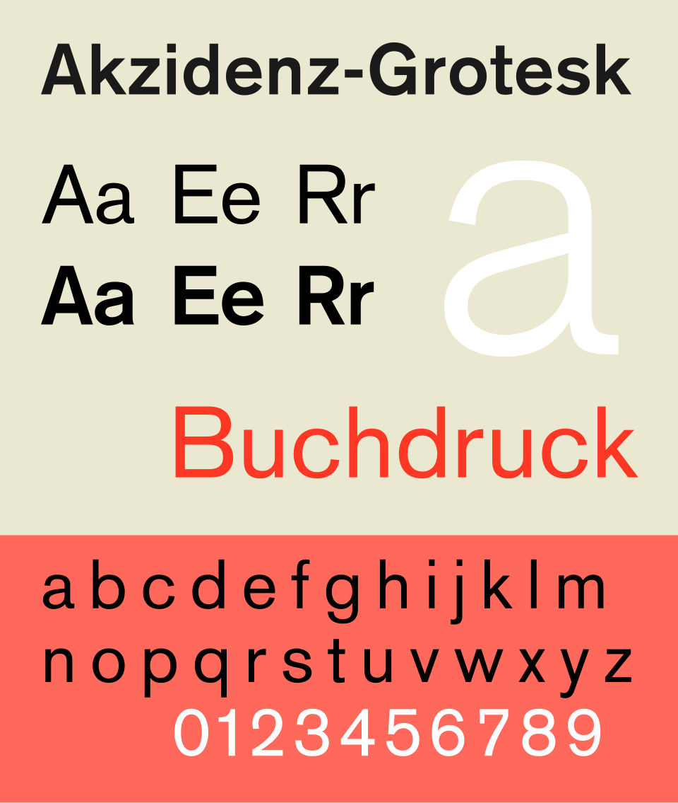
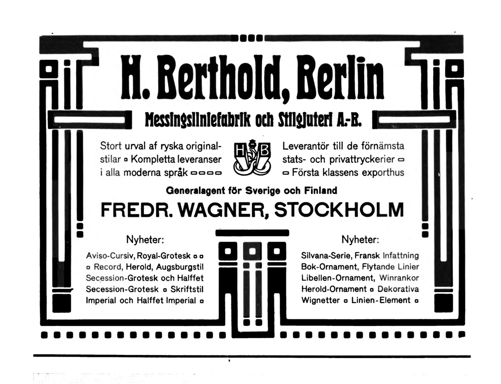

References / Typeface / 05
Akzidenz-Grotesk typeface
A plain jobbing sans-serif from 1898 that Swiss designers of the 1950s made the voice of the style.
- Source
- Wikipedia: Akzidenz-Grotesk
- Creator
- H. Berthold AG (Berthold Type Foundry), Berlin
- Made
- 1898
- Style
- International Typographic Style (core typeface; agent-proposed, not yet reviewed by a person)
- Moods
- Neutral, plain, sturdy, objective
- Evidence
- Inspected the public-domain digital specimen File:AkzidenzGroteskspecAIB1.svg, rendered by Wikimedia at 960 px, and the 1905 Berthold advertisement File:Berthold Sweden advertisement.jpg. Both are stored. The specimen shows a modern digital version, not the metal type.
- Reviewed
- Rights
- Open license, stored. License: public domain. Rights policy


Context
Akzidenz-Grotesk was released by the Berthold Type Foundry of Berlin in 1898. Akzidenz means jobbing work such as publicity, tickets, and forms. Wikipedia: Akzidenz-Grotesk.
Wikipedia states that it was little known for about fifty years and then became the preferred typeface of many Swiss designers of the post-war International or Swiss style. It was sold as Standard in English-speaking countries. Wikipedia.
The 1905 advertisement shown here offers Royal-Grotesk, which Wikipedia says was later branded as the light weight of Akzidenz-Grotesk. It appeared in the Swedish printing journal Almänna Svenska Boktryckareföreningens Meddelanden. Commons file page.
Josef Müller-Brockmann’s favourite typeface was Akzidenz-Grotesk, according to Wikipedia: Josef Müller-Brockmann. See Der Film and Neue Grafik.
Observed
- Specimen: strokes are nearly even in weight, with no serifs and no visible contrast between thick and thin.
- Specimen: terminals on a, e, and s are cut at an angle rather than horizontally; the R has a straight, diagonal leg.
- Specimen: the regular and bold lines show the same letters, so the family reads as one voice in two weights.
- 1905 advertisement: the grotesque type sits in small, secondary lines (the agent’s name, the novelty lists) inside a heavy Jugendstil border of bars and squares, below a condensed display face.
Why it belongs
The 1905 advertisement shows the type before the style: the same neutral letters, but framed by ornament and centered. The International Typographic Style kept the letters and removed the frame.
Its value to Swiss designers was its ordinariness. A typeface made for tickets and forms carried no historical or artistic associations.
Borrow
Choose a grotesque with slightly irregular, older proportions when a neo-grotesque feels too smooth. Use two weights of one family and let size do the rest.
Compare with Helvetica and Univers, both developed in the 1950s from the same model.
Measured
Machine-extracted by tools/image-traits.py on . Full measurement.
- Mean chroma
- 0.27
- Palette
- #eae8d0 56%
- #ff695b 28%
- #ffffff 3%
- #000000 3%
- #1a1717 2%
- #ff3523 1%
- #fd7e70 1%
- #34332f 1%




